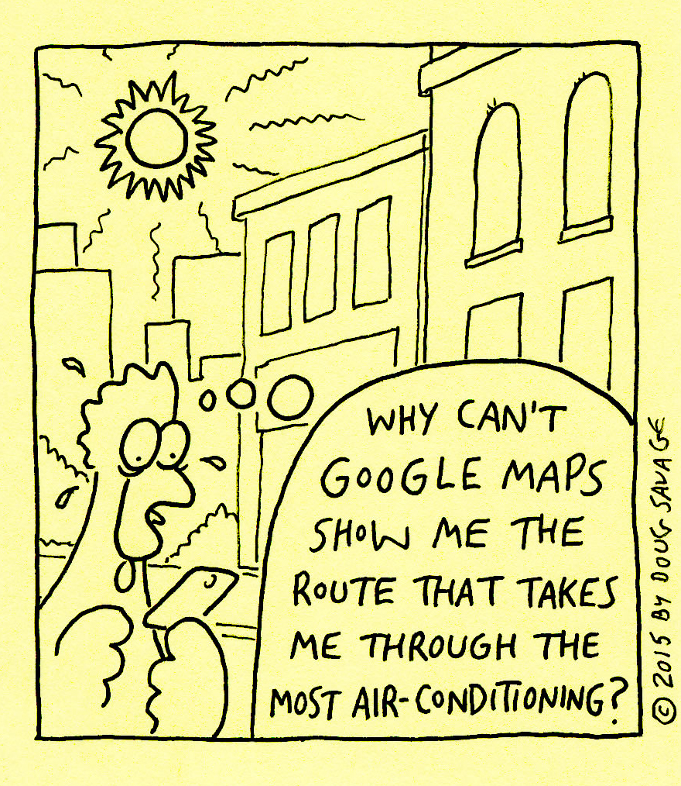

Métricas físicas de deslocação pedonal em contexto urbano
Desenvolvimento de um modelo de teste
Tema, Objetivos e Estado da arte

Pesquisa e seleção da informação necessária
Caminhos Pedonais
Utilizada rede pedonal desenvolvida no IST (Gonçalves et al., 2015). Não existindo um padrão para a modelação de redes pedonais este trabalho caraterizou os diversos elementos da rede.
Atravessamentos Pedonais
Modelo Digital do Terreno
Os modelos encontrados têm resoluções consideradas insuficientes. Para minimizar incorreções nos declives foi decidido desenvolver um novo modelo digital de terreno.
Velocidade do Peão
Escolhida a equação de Tobler (1993) que considera qualquer declive D, negativo ou positivo, no cálculo da velocidade V de caminhada do peão.
Em função da velocidade e declive é possível estimar o consumo de oxigénio, o que permite calcular o gasto de calorias. Foram utilizadas equações estimadas a partir de valores apresentados por Yamazaki et al. (2009).
Tratamento da informação e criação do modelo
Modelo Digital do Terreno
Foram corrigidos os erros encontrados nos dados cartográficos. Foi necessário desenhar linhas de escarpa para melhorar a representação do modelo.
Pontos de cota
Curvas de nível e linhas de escarpa
Modelo digital de terreno criado
Caminhos pedonais
Foram tratados os caminhos pedonais partilhados e caraterizados em função do seu declive, velocidade e tempo de caminhada, consumo oxigénio e energia dispendida.
Caminhos pedonais partilhados
Atravessamentos pedonais
Modelação do edificado e do sombreamento
Para representar o verão e o inverno foram escolhidos o dia mais quente e o dia mais frio, respetivamente, no registo dos extremos climáticos para a cidade de Lisboa.
Edificado modelado
Sombreamento modelado - inverno 11h
Aplicação do modelo
Declive dos caminhos pedonais
A primeira aplicação que o modelo permite é a análise do declive e qualquer conjunto de caminhos pode ser classificado em função deste.
Declive [%]
Declive ≤ 8%
Declive > 8%
Declive [%]
Áreas de abrangência pedonal
Podem ser usadas em diversas análises, onde se incluem avaliações de redes de transportes públicos e de localizações de serviços, comércio ou habitacões.
400m800m
Sem declives5min10min
1,92km2
Com declives, sentido saída5min10minbase
Com declives, sentido entrada5min10minbase
Com declives, interseção5min10minbase
+Escadas5min10minbase
1,77km2 92%
+Atravessamentos5min10minbase
1,67km2 87%
+Interior5min10minbase
1,32km2 69%
Mobilidade reduzida5min10minbase
0,86km2 45%
Rotas pedonais
Podem ser desenhadas em função da distância, do consumo de oxigénio, do tempo ignorando declives, do tempo em função dos declives e do tempo em função dos declives e escadas.